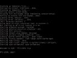

05: Assisted Lab: Installing, Using, and Blocking a Malware-based Backdoor
24 Minutes Remaining
Assisted Lab 05: Installing, Using, and Blocking a Malware-based Backdoor
Scenario
In this activity, you will disable Windows Defender, leaving a server vulnerable. You will then simulate the accidental installation of malware and view the changes. You will take on the role of a pen tester or hacker, and determine whether the malware was installed based on open network ports. Next, you'll connect to the infected server, proving you having the ability to exploit it. Finally, in the role of security administrator, you will remove the malware.
Objectives
This activity is designed to test your understanding of and ability to apply content examples in the following CompTIA Security+ objectives:
- 1.2 Given a scenario, analyze potential indicators to determine the type of attack.
Disable Windows Defender
In the first part of this activity, you will disable Windows Defender protection, leaving the server vulnerable to malware.
Select the MS1 VM, select Ctrl+Alt+Delete, then at the login screen, in the Password box, type Pa$$w0rd and press ENTER.
Select Start, and right-click Windows PowerShell and select Run as Administrator.
When prompted, select Yes to confirm the UAC.
Type the following command, then press ENTER:
Set-MpPreference -DisableRealTimeMonitoring $TrueThis PowerShell cmdlet disables Windows Defender online scanning.
Close the PowerShell window.
Install program from Odysseus.iso
Pretend that you are installing the program on the Odysseus.iso disc image, thinking that it is a legitimate piece of software. Insert the disc image and use its autoplay settings to start the installation.
Select ODYSSEUS to load the ISO image in the current VM.
In the MS1 VM window, click the notification and then select Run setup.exe (it may take up to one minute for the notification to appear).
If you don't see the notification pop-up, right click on Start, Run and type d:\setup.exe then Enter.
A User Account Control (UAC) warning is shown because a setup.exe process is trying to execute. The process' image file is unsigned (the publisher is listed as unknown).
If necessary, select Show more details. Note that the install script is set to run in silent mode.
You would not normally proceed, but for this activity, select Yes.
The installer runs silently, with no visible window. When installation is complete, you will see two new icons on the desktop. Open either of the SimpleHash or SimpleSalter shortcuts from the desktop.
Close the utility window.
Identify system changes
The program seems to have installed two innocuous utilities, but what else might have changed on the computer? Use Task Manager to identify unauthorized system changes.
Right-click the taskbar and select Task Manager. If necessary, select More details to view the full interface. Inspect the list of processes. Can you spot anything unusual?
What process seems suspicious?
Correct
The purpose behind Assisted Labs is to confirm your knowledge and guide you through the given configurations. If you get a scored question incorrect, you may repeat the question and achieve the correct answer. You do not need a correct answer to move forward through the lab.
Task Manager.
 Ncat is a well-known attack tool. When searching for suspicious processes, filter out known Windows porcesses (unless they are typospoofed) and investigate the exceptions. Note that the hMailServer process is a legitimate third-party application for this server role.
Ncat is a well-known attack tool. When searching for suspicious processes, filter out known Windows porcesses (unless they are typospoofed) and investigate the exceptions. Note that the hMailServer process is a legitimate third-party application for this server role.
Confirm that the malware has been installed by verifying that ncat.exe is running in the process list.
Correct
You need a good understanding of what should be running or is authorized on your hosts and network to have a better chance of spotting what should not be there. The more authorized software and ports you allow, the harder the job of spotting the bad stuff becomes, especially when it comes to training new security staff. This is one of the reasons the principle of running only necessary services is so important.
Close Task Manager.
Identify network ports
The Odysseus software has installed a backdoor application called Netcat on the computer. This runs with the privileges of the logged-on user (currently Administrator) and allows a remote machine to access the command prompt on MS1. Use the DC1 VM to run a posture assessment and see if the backdoor can be discovered. To discover the port that the backdoor is listening on, you can use a network scanner called Angry IP Scanner (angryip.org).
Switch to the DC1 VM.
Click Ctrl+Alt+Delete to send the Ctrl+Alt+Delete sequence to the VM and show the login page. Sign in as 515support\Administrator using Pa$$w0rd as the password.
From the desktop, open the AngryIP shortcut.
In the IP Range: boxes type
10.1.0.2(you will do this in both boxes) to target the MS1 virtual machine.Select the Preferences icon to open the Preferences dialog box.
Select the Ports tab and enter
1-1024,4400-4500in the Port selection box. Select OK.Configuring AngryIP scanner

Select Start to begin the scan.
The scan takes about one minute.
When the scan is complete, select Close.
Look at the open ports on the MS1 VM—how many of them can you identify?
Which port is associated with the trojan?
Well-known port numbers
You should recognize these well-known ports:- 80—HTTP.
- 135, 139, 445—RPC/NetBIOS/SMB.
- 25, 143, 587—email (SMTP, IMAP, and SMTP).
Do you see any port numbers that are not accounted for here and might therefore be suspicious?
Close the Angry IP Scanner window.
Test backdoor
To connect to the backdoor on MS1, you will use a terminal emulation client called PuTTY (chiark.greenend.org.uk).
On the DC1 VM, double-click the PuTTY icon in the LABFILES folder.
In the Host name (or IP address) box, type
10.1.0.2. In the Port box, enter4450. Set the Connection type to Raw.PuTTY configurations

In the Saved Sessions box, type
MS1then select the Save button.Select Open. After a few seconds, you will be connected to the command prompt on MS1.
If the connection does not display a C:\ prompt, it is not successful. Confirm the above steps in the following order: 1) Defender is disabled, 2) Port 4450 is specified in Putty (as is the correct IP address of 10.1.0.2 and connect type: RAW)

In the putty terminal window, run the following three commands to confirm your remote connection:
whoamihostnameipconfigRun the following command to create a user account named mal on the remote server:
net user /add mal Pa$$w0rdConfirm that the "mal" local user account exists.
Many of your tasks are scored by scripts. You must use the same names and other labels as the lab instructions specify or your task may be marked as incorrect. For example, if the task says to create a user account named “user01,” than “user1” would be marked as incorrect.
Practice typing in the commands manually to help you learn and remember the syntax.
Run the following command to add the mal user to the local administrators group:
net localgroup administrators mal /addConfirm that user "mal" is a member of the local administrators group.
Issues with the mal user account.
If the user or group is not found, or if the user is not part of the administrators group, then repeat the two commands above.Creating a user account is one way for a threat actor to establish a persistence mechanism and re-connect to the target network or host.
Leave the PuTTY window open.
Block backdoor
Use Task Manager and the Windows Defender to investigate the changes that the Trojan has made.
Switch to the MS1 VM and, if necessary, use Ctrl+Alt+Delete to sign back in as 515support\Administrator with password Pa$$w0rd.
If a Windows Script Host error appears, click OK. There may also be a Windows Defender notification.
Using File Explorer, browse to
C:\Program Files (x86)\Odysseusand note the ini.vbs file.Open ini.vbs in Notepad (right-click and select Edit). Note the actions that the script performs.
Ini script.
This script launches netcat and creates a firewall rule to allow connections to it over port 4450.Close the script file, and then use File Explorer to delete it.
Open Task Manager.
Select the Processes tab in Task Manager, and then right-click on the ncat (32 bit) process and select End task.
You can alphabetize the process list by clicking the Name column at the top.
Close Task Manager.
Select Start then type
firewall with advanced securityand open the Windows Defender Firewall with Advanced Security link that appears.Select the Inbound Rules node. Can you spot anything unusual that might be related to the ncat backdoor that was installed?
What is the name of the firewall rule associated with the trojan?
The Inbound Rules.

Disable the rule added by the Trojan by right-clicking it and selecting Disable Rule.
Confirm that the firewall blocks connections over port 4450.
Confirm that you have deleted the ini.vbs file.
Confirm that the malware has been removed by verifying that ncat.exe is no longer running in the process list.
Remove the malware
If one or more of the above check fails, repeat the steps to ensure that you deleted the .ini file, stopped the netcat (32 bit) process, and disabled the firewall rule pertaining to the Service Port.This Trojan is trivially easy to block and remove, but most malware is more sophisticated.
Comprehensive questions
Answer the following final comprehensive question to ensure that you recognize the importance of the activity steps and the uses for the information you have learned.
What three tasks did you accomplish to block access to the malware? (Choose three)
How did the ncat malware get installed?
Why is it useful to know the common port numbers?
Grade Lab
That concludes this lab. Please ensure you end it properly rather than just closing the browser window.
- Select Submit below to grade the lab and then Yes to submit for grading. Once you have submitted for grading, you will not be able to return to the lab environment.
DC1
To release mouse, press Ctrl+Alt+Left Arrow

RT1-LOCAL
To release mouse, press Ctrl+Alt+Left Arrow
MS1
To release mouse, press Ctrl+Alt+Left Arrow
Support Information
| ID | 34495175 |
| Host | SEA-HV29 |
| Datacenter | US West (Seattle) |
-
Lab Interface FAQ
Frequently asked questions about the lab interface
- Help
- Report a bug
- Click here to Submit a Support Request.
Please include as much detail as possible in your help request, including the lab ID above.